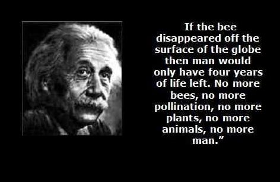
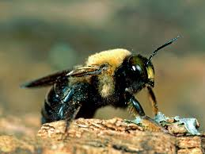

Why It Matters
Bees are important for pollination The most important thing that bees do is pollinate.
Pollination is needed for plants to reproduce, and so many plants depend on bees or other insects as pollinators.
When a bee collects nectar and pollen from the flower of a plant,
some pollen from the stamens—the male reproductive organ of the flower—sticks to the hairs of her body. When she visits the next flower
,
some of this pollen is rubbed off onto the stigma, or tip of the pistil—the female reproductive organ of the flower.
When this happens, fertilization is possible, and a fruit, carrying seeds, can develop.
The vast majority of plants we need for food rely on pollination,
especially by bees: from almonds and vanilla and apples to squashes. We may lose all the plants that bees pollinate, all of the
animals that eat those plants and so on up the food chain.
6 WAYS TO HELP THE BEES
1. Plant bee friendly plants, flowers and food.
2. Avoid the use of chemicals and pesticides in your garden.(This will help you also)
3.Support local sustainable farmers.
4. Buy local raw honey Here!!
5. Encourage local gardens and stores not to sell be killing pestuces.
6. Spread the word and share our page!!


Different types of bees:

Bumblebees:
While other animals pollinate, bumblebees are particularly good at it.
Their wings beat 130 times or more per second, according to the National Wildlife Federation,
and the beating combined with their large bodies vibrates flowers until they release pollen,
which is called buzz pollination. Buzz pollination helps plants produce more fruit.

Carpenter bees:
Carpenter bees are pollinators, so it really is not good for the environment—or your
landscaping—to kill them. You can wait until you see the bees leave the nest during the day
and then seal their tunnel opening. Use caulk or a wood dowel with carpenter's glue to
close up the holes.